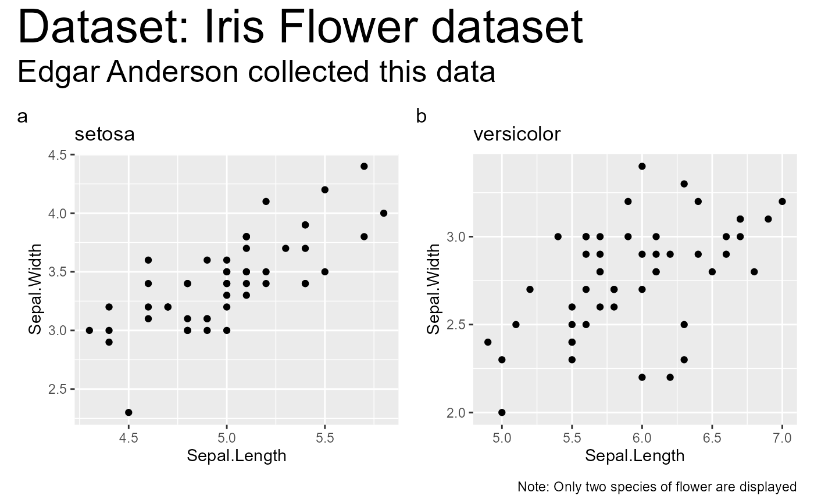

Wrapper around plot_grid that will return
a plotgrid along with a combination of title, caption, and annotation label
combine_plots(..., title.text = NULL, title.color = "black", title.size = 16, title.vjust = 0.5, title.hjust = 0.5, title.fontface = "bold", caption.text = NULL, caption.color = "black", caption.size = 10, caption.vjust = 0.5, caption.hjust = 0.5, caption.fontface = "plain", sub.text = NULL, sub.color = "black", sub.size = 12, sub.vjust = 0.5, sub.hjust = 0.5, sub.fontface = "plain", sub.x = 0.5, sub.y = 0.5, sub.vpadding = grid::unit(1, "lines"), sub.angle = 0, sub.lineheight = 0.9, title.rel.heights = c(0.1, 1.2), caption.rel.heights = c(1.2, 0.1), title.caption.rel.heights = c(0.1, 1.2, 0.1))
| ... | Arguments passed on to
|
|---|---|
| title.text | String or plotmath expression to be drawn as title for the combined plot. |
| title.color | Text color for title. |
| title.size | Point size of title text. |
| title.vjust | Vertical justification for title. Default = |
| title.hjust | Horizontal justification for title. Default = |
| title.fontface | The font face ( |
| caption.text | String or plotmath expression to be drawn as the caption for the combined plot. |
| caption.color | Text color for caption. |
| caption.size | Point size of title text. |
| caption.vjust | Vertical justification for caption. Default = |
| caption.hjust | Horizontal justification for caption. Default = |
| caption.fontface | The font face ( |
| sub.text | The label with which the combined plot should be annotated. Can be a plotmath expression. |
| sub.color | Text color for annotation label (Default: |
| sub.size | Point size of annotation text (Default: |
| sub.vjust | Vertical justification for annotation label (Default:
|
| sub.hjust | Horizontal justification for annotation label (Default:
|
| sub.fontface | The font face ( |
| sub.x | The x position of annotation label (Default: |
| sub.y | The y position of annotation label (Default: |
| sub.vpadding | Vertical padding. The total vertical space added to the
label, given in grid units. By default, this is added equally above and
below the label. However, by changing the y and vjust parameters, this can
be changed (Default: |
| sub.angle | Angle at which annotation label is to be drawn (Default:
|
| sub.lineheight | Line height of annotation label. |
| title.rel.heights | Numerical vector of relative columns heights while combining (title, plot). |
| caption.rel.heights | Numerical vector of relative columns heights while combining (plot, caption). |
| title.caption.rel.heights | Numerical vector of relative columns heights while combining (title, plot, caption). |
Combined plot with title and/or caption and/or annotation label
https://indrajeetpatil.github.io/ggstatsplot/articles/web_only/combine_plots.html
# loading the necessary libraries library(ggplot2) # preparing the first plot p1 <- ggplot2::ggplot( data = subset(iris, iris$Species == "setosa"), aes(x = Sepal.Length, y = Sepal.Width) ) + geom_point() + labs(title = "setosa") # preparing the second plot p2 <- ggplot2::ggplot( data = subset(iris, iris$Species == "versicolor"), aes(x = Sepal.Length, y = Sepal.Width) ) + geom_point() + labs(title = "versicolor") # combining the plot with a title and a caption combine_plots( p1, p2, labels = c("(a)", "(b)"), title.text = "Dataset: Iris Flower dataset", caption.text = "Note: Only two species of flower are displayed", title.color = "red", caption.color = "blue" )